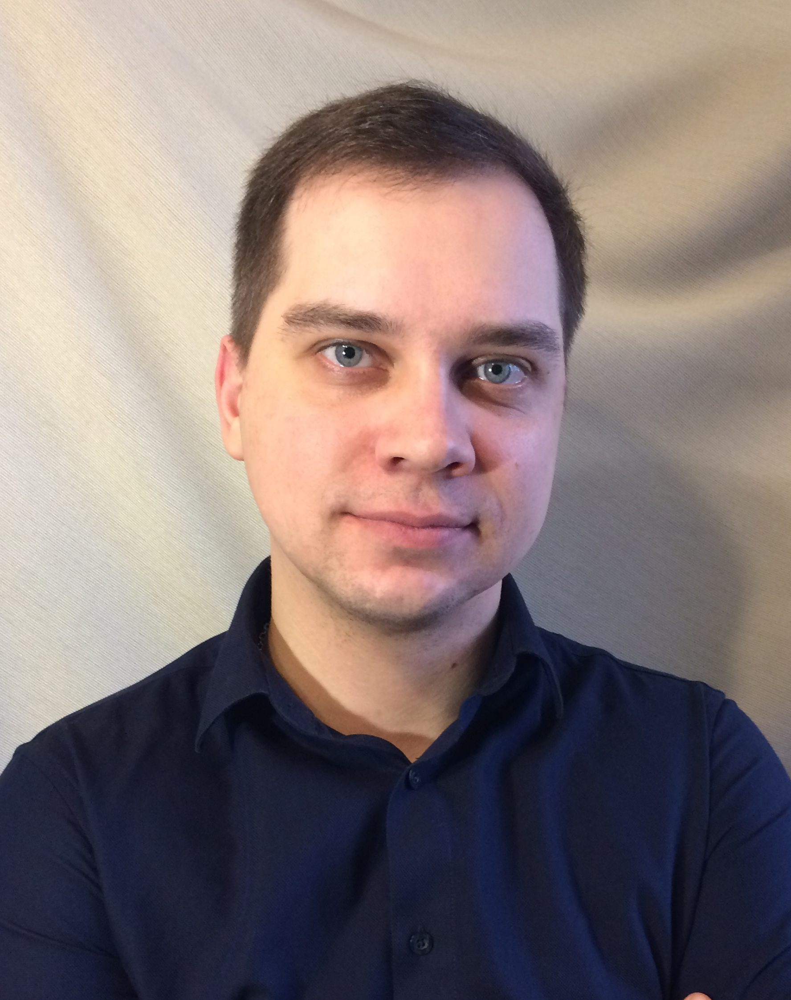

|  | Portnov PavelMy objective is to obtain a position with a company that will allow me to utilize my current skills while giving me the opportunity to learn and grow. Friendly and enthusiastic with exceptional customer service skills. Able to learn new tasks quickly and proficiently. Level-headed, energetic and reliable. |
Instruments Sets Logistics Specialist (Supply Chain), May 2016 – Present
Pick, pack and ship medical equipment kits to hospitals
Check stock upon return to the warehouse
Pick and ship replenishment orders to consignment locations
Decontamination processing of returned equipment
Perform Stocktakes in the warehouse and hospitals
Maintaining inventory record accuracy
Stock control - Investigating and resolving stock in instrument sets
Stock adjustments
Ordering daily stock from 3PL (Moscow)
Liaise with Sales and other departments regarding customer issues
Registration of accompanying and transport documents
Sales representative, November 2014 – May 2016
Maintaining and nurturing relationships with existing customers to maximize profitable sales.
Consulted with businesses to supply accurate product and service information.
Performing professional presentations of company products and services on-site.
Documenting all activities in a CRM system. Demonstrating knowledge of a sales atmosphere in customer needs, pricing, and competition.
Conducting on-site surveys. Resolving customer complaints by investigating problems and developing solutions.
Developed several new customers, and have been successful in getting to new collectors or projects at current customers.
Responsible for company programs, promotions, contests, and trade shows.
Alexey Frolov
Instruments sets logistics manager
Smith and Nephew LLC +7(985)103-16-13alexey.frolov@smith-nephew.com